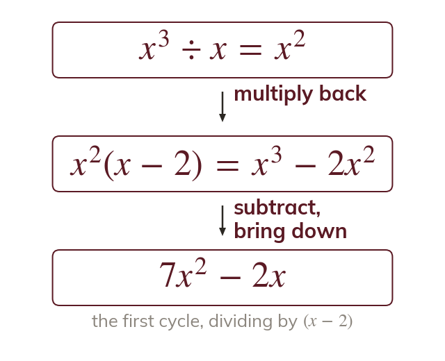
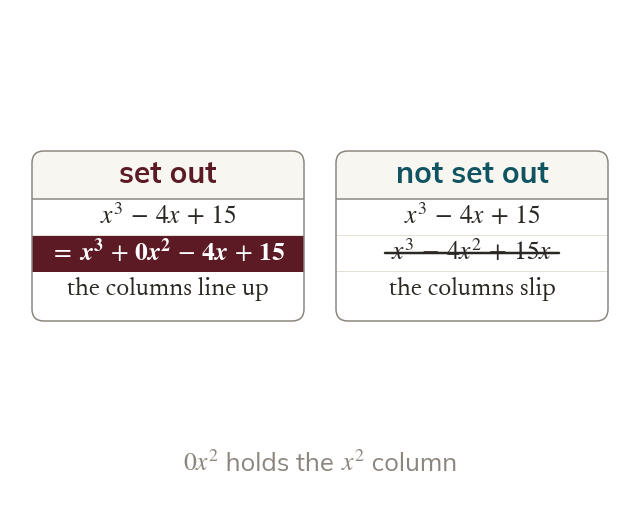
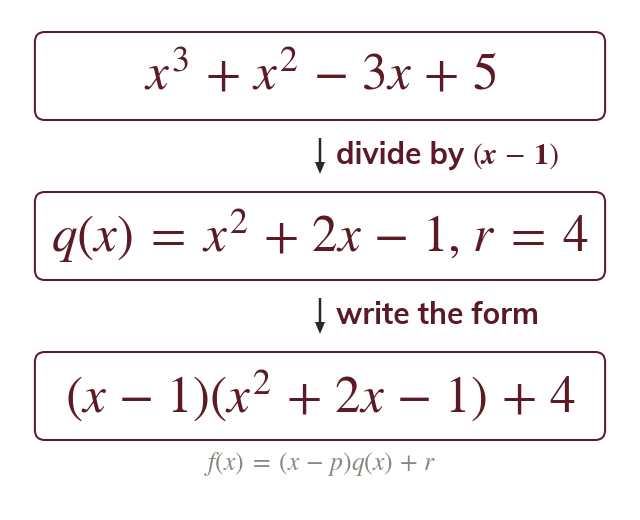
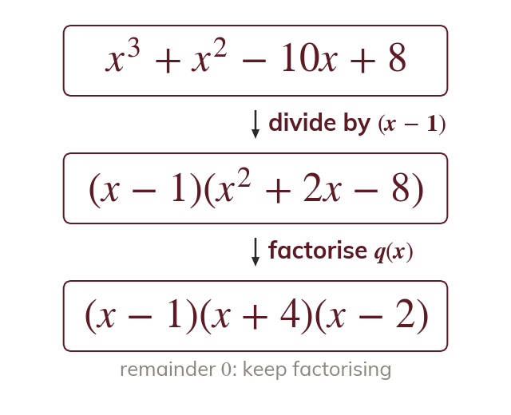

Divide, multiply back, subtract
Polynomial long division repeats the cycle of number long division. Divide the leading terms, multiply back, subtract, then bring down the next term.
Dividing a polynomial by or works just like long division of numbers, and writes it as A remainder of means is a factor, which the factor theorem uses next lesson to factorise and solve cubics.
Work down the page at your own pace. Write every answer in your book first, then click to check it.
Read each card, then follow the worked examples one step at a time.

Polynomial long division repeats the cycle of number long division. Divide the leading terms, multiply back, subtract, then bring down the next term.

Each power of x below the leading one needs its own column. A missing power is written in with a zero coefficient before dividing.
Pick an answer. If it's wrong, the feedback tells you which mistake it was.
Read each card, then follow the worked examples one step at a time.

Dividing by gives a quotient and a remainder So where is a number.

When the remainder is is a factor and Factorise the quadratic quotient to finish.
Pick an answer. If it's wrong, the feedback tells you which mistake it was.
Finished? Next lesson: 7.3 The Factor Theorem.
For each skill, tap the one that is true for you today. Your Revise pages start with anything you mark Not yet.
Your ratings are saved on this device only.
Log in, then search for a code to practise that skill.